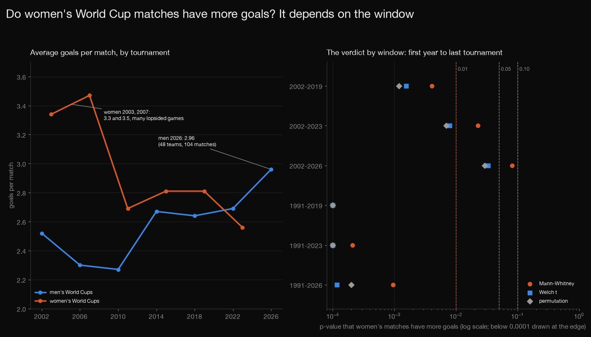
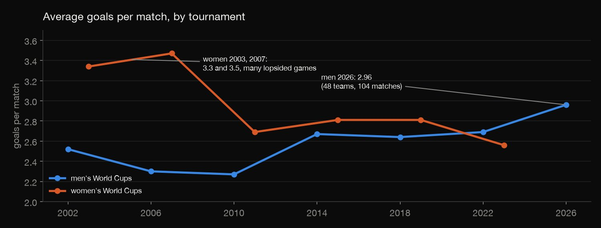
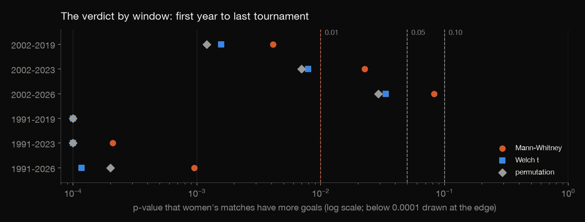
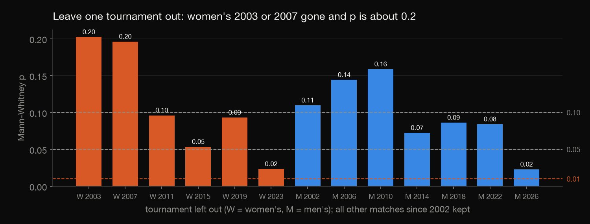
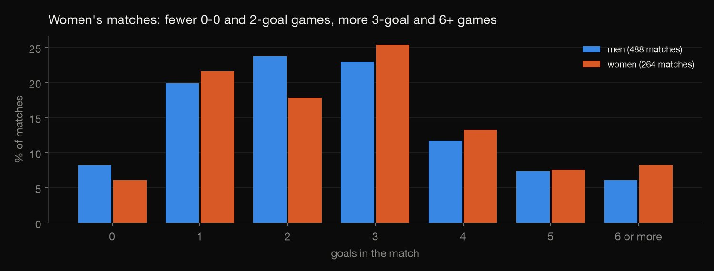

Statistics · Hypothesis testing · 2026-10
Do Women's Matches Have More Goals?
Every World Cup match since 2002, men's against women's: women's games average 2.88 goals to men's 2.61, but whether that counts as "significantly more" flips with the tournaments you include, the test you pick and the threshold you set.

Matches in one tournament share teams and conditions, so they are not independent, and the tests treat them as if they were: the p-values are probably too small. Scores include extra time, and the data has no stage, so group games and knockouts cannot be separated. Nothing here models why: quality gaps, format changes (the men's field grew from 32 to 48 teams in 2026) and tactics are not in the data.
01 — The problem
A popular statistics exercise asks: do women's World Cup matches have more goals than men's? You run one test, read one p-value and answer yes or no.
This project runs the test, then asks how fragile the answer is: which tournaments, which test, which significance level. The question follows DataCamp's "Hypothesis Testing with Men's and Women's Soccer Matches" project; the data is the open international-results dataset on GitHub (CC0), pulled on 3 October 2026, which includes the 2026 men's tournament.
02 — What I built
All 752 World Cup finals matches since 2002 (488 men's, 264 women's), and one question, are women's matches higher-scoring?, answered every way the data allows:
- Three tests: Mann-Whitney U (goal counts aren't bell-shaped), Welch's t and a permutation test.
- Six windows: start in 2002 or 1991, stop after the 2019, 2023 or 2026 tournament.
- Leave one tournament out: thirteen reruns.
- Check:
check.pyrecomputes 110 numbers in plain Python, including a Mann-Whitney built by counting every pair.
03 — How it was built
- 01
Download both files
The open international-results datasets on GitHub hold every international match: men's (49,547, 1872 to 2026) and women's (11,650, 1956 to 2026). Both are CC0. The script records the pull date and row counts, so the numbers on this page trace to one snapshot.
- 02
Keep the World Cup finals; count goals and margins
Only rows whose tournament is exactly "FIFA World Cup" are kept, which leaves out qualifiers and other cups. Goals are both teams' goals in the match; the margin is the winner's goals minus the loser's. The main window starts in 2002, as in the brief: men's 2002 to 2026 and women's 2003 to 2023.
d = d[d["tournament"] == "FIFA World Cup"].copy() d["goals"] = d["home_score"] + d["away_score"] d["margin"] = (d["home_score"] - d["away_score"]).abs() - 03
Test it three ways
Goal counts are small whole numbers with a long tail, so the main test ranks the matches (Mann-Whitney U) instead of comparing averages. Two more tests answer the same question differently: Welch's t-test, and a permutation test that shuffles the pooled goals 10,000 times to see how often a gap this big appears by luck. All three are one-sided: are women's matches higher-scoring?
"p_mannwhitney": stats.mannwhitneyu(women, men, alternative="greater").pvalue, "p_welch": stats.ttest_ind(women, men, equal_var=False, alternative="greater").pvalue, "p_permutation": (1 + (null >= diff).sum()) / (1 + PERMS)}, null - 04
Change the window
The same three tests are repeated for six windows: the first year (2002, or 1991, the first women's World Cup) against the last tournament included (2019, 2023 or 2026). A bootstrap interval, resampling both groups 10,000 times, puts error bars on the gap in the main window.
- 05
Leave one tournament out
The Mann-Whitney is rerun 13 times, each time without one tournament (six women's, seven men's). If one tournament carries the result, it shows here.
- 06
Recompute it a different way
check.pyrereads the raw CSVs with plain Python. The Mann-Whitney is rebuilt by counting every pair of a women's and a men's match, the permutation test and the bootstrap are run again with another random generator and twice the draws, and every mean and share comes from CSV rows. All 110 numbers agree.u = sum((x > y) + 0.5 * (x == y) for x in a for y in b)
04 — Results

Women's matches averaged 2.88 goals and men's 2.61 since 2002. That is a gap of 0.27 goals, with a bootstrap 95% interval of −0.01 to +0.57. The Mann-Whitney p-value for the question, as the tournaments pile up:
| Through | Women | Men | p |
|---|---|---|---|
| 2019 | 2.98 | 2.48 | 0.004 |
| 2023 | 2.88 | 2.51 | 0.023 |
| 2026 | 2.88 | 2.61 | 0.083 |
Each row counts every tournament up to that year; the men's World Cup is held in the other years, so its last one is 2018, 2022 and 2026.

The verdict depends on the choices. At 0.01 only the 2019 window says yes (two of the three tests for 2023). At 0.05 the three tests disagree for the full window: Welch (0.034) and the permutation test (0.029) say yes, Mann-Whitney (0.083) says no. At 0.10 all agree. Starting in 1991 adds the lopsided early women's tournaments, and then every test gives a p-value below 0.001.

The gap is mostly two tournaments. Women's 2003 and 2007 averaged 3.34 and 3.47 goals, with a mean margin of 2.4 and 2.3 goals; the next four women's tournaments averaged 2.56 to 2.81. Leave out either one and the p-value is about 0.20. Leave out the men's 2026 tournament (2.96 goals, 48 teams) and it drops to 0.023.

The extra goals come from lopsided games. 25.8% of women's matches were decided by three goals or more, against 15.4% of men's; the mean margin is 1.87 against 1.39. Women's matches have fewer 2-goal games (17.8% against 23.8%) and more with six or more goals (8.3% against 6.1%).
Bottom line. Women's World Cup matches have had somewhat more goals on average, mostly because of lopsided early tournaments, and the gap has closed: in the latest editions the men's average (2.96 in 2026) is above the women's (2.56 in 2023). Whether to call the difference "significant" depends on choices that a single p-value hides.
05 — What I'd do next
- Add the match stage (the Fjelstul World Cup database has it for the tournaments it covers) to compare group games with knockouts, where the quality gap is smaller.
- Model goals with a count regression (negative binomial) on team strength, so lopsided pairings are accounted for instead of compared.
- Rerun after the next women's World Cup in 2027.